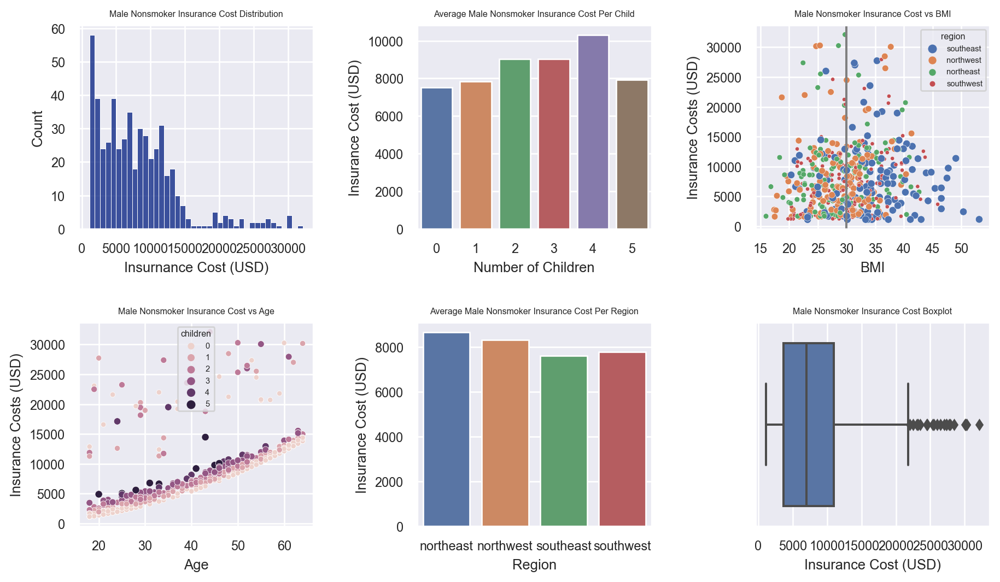
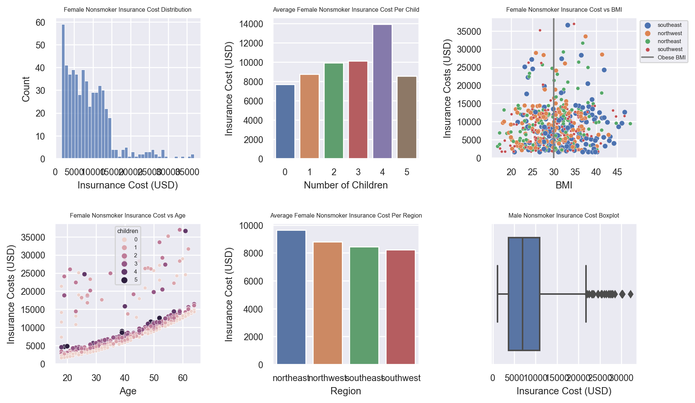

The Impact of Smoking on Health Insurance Premiums: Unveiling the True Costs
In this captivating investigation, we dive deep into the impact of smoking habits on medical insurance expenses, carefully examining the nuanced differences between genders, including both smokers and non-smokers.
Python
Statistics
Jupyter Notebook
Data Visualization
Author
Brian Cervantes Alvarez
Published
July 14, 2022
Abstract:
This study confirms the significant impact of smoking on the escalation of health insurance premiums. Male and female smokers with a body mass index (BMI) of 30 or higher face additional charges, compounding their financial burden. Male smokers experience a 52% increase, while female smokers face a 49% rise in insurance charges, in addition to the base premium for smokers.
The severity of the situation is evident, as male smokers pay 408.57% more than non-smokers, and female smokers pay 350.12% more. The data unequivocally supports the notion that unhealthy lifestyle choices, such as smoking and high BMI, result in higher health insurance premiums. It is important to note that premiums also increase gradually over time with age.
While this project provides valuable insights, further exploration opportunities exist. Applying machine learning techniques to assess the representativeness of the sample could enhance the accuracy of conclusions and foster advancements in the field of health insurance.
Data Setup and Import
import matplotlib.pyplot as pltimport numpy as npimport pandas as pdimport seaborn as snsfrom scipy import stats#read in the csv filedf = pd.read_csv('insurance.csv')print(df.head())
age sex bmi children smoker region charges
0 19 female 27.900 0 yes southwest 16884.92400
1 18 male 33.770 1 no southeast 1725.55230
2 28 male 33.000 3 no southeast 4449.46200
3 33 male 22.705 0 no northwest 21984.47061
4 32 male 28.880 0 no northwest 3866.85520
Analysis of Factors Affecting Insurance Costs:
The objective of this analysis is to identify the factors influencing insurance costs and determine their impact on individuals’ financial burden. Specifically, we investigate the relationship between smoking habits and increased medical insurance expenses.
Initially, we examine the prevalence of smoking within the dataset. Subsequently, we conduct a comprehensive assessment of the distribution of charges among smokers, employing visual aids like box plots to illustrate quartiles and identify any outliers. Statistical measures, including minimum, maximum, mean, and median, are then employed to provide a more comprehensive understanding of the data.
Furthermore, we conduct a gender-based analysis to ascertain if there are notable differences in expenses between male and female smokers. This allows us to evaluate any significant variations in insurance costs based on gender.
Histogram Plot of Smokers vs Nonsmokers
Smoker Count: 274
Nonsmoker Count: 1064
To visually illustrate the distribution of smokers and nonsmokers within the dataset, a histogram plot was generated. The plot showcases the count of individuals categorized as smokers or nonsmokers. The number of smokers is 274, while the count of nonsmokers is 1064.
#while a histogram is not necessary, it can really show in the visual count of smokers vs nonsmokersplt.figure(figsize = (8, 6))sns.set(font_scale =1.5)sns.histplot(df.smoker)plt.title('Smoker vs Nonsmoker Count')plt.tight_layout(pad =2)plt.show()plt.clf()#num_smokers = df.smoker.value_counts()['yes']#num_nonsmokers = df.smoker.value_counts()['no']#print("Exact number of smokers: {num_smokers}".format(num_smokers = num_smokers))#print("Exact number of nonsmokers: {num_nonsmokers}".format(num_nonsmokers = num_nonsmokers))
<Figure size 672x480 with 0 Axes>
Boxplot and Histogram Distribution of Insurance Costs for Smokers
Upon analyzing the insurance costs specifically for smokers, a boxplot and histogram were constructed. The interquartile range indicates a substantial spread of $20,125.33 between the first and third quartiles.
Notably, the distribution of insurance costs for smokers exhibits a bimodal pattern, suggesting the presence of a contributing factor that significantly impacts insurance expenses. Further investigation is required to identify the specific variable responsible for the observed increase in insurance costs among smokers. Potential factors to consider include region, BMI, sex, number of children, and age.
#find mean of insurance cost for smokerssmoker_mean =round(np.mean(df_smokers.charges), 2)#print('The average insurance cost for being a smoker: ${mean}'.format(mean = smoker_mean))#find median of insurance cost for smokerssmoker_median =round(np.median(df_smokers.charges), 2)#print('The median insurance cost for being a smoker: ${median}'.format(median = smoker_median))#find standard deviation...smoker_std =round(np.std(df_smokers.charges),2)#print('The standard deviation is: ${std}'.format(std = smoker_std))#let's see the variancesmoker_var =round(np.var(df_smokers.charges),2)#print('The variance is: {var}'.format(var = smoker_var))#maximum costsmoker_max =round(np.max(df_smokers.charges), 2)#print('The maximum insurance cost for being a smoker is: ${max}'.format(max = smoker_max))#minimum costsmoker_min =round(np.min(df_smokers.charges), 2)#print('The minimum insurance cost for being a smoker is: ${min}'.format(min = smoker_min))
The summary statistics provide valuable insights into the distribution of insurance costs for smokers. The mean insurance cost for smokers is calculated to be $32,050.23, representing the average expense in this category. The median insurance cost, at $34,456.35, serves as the central value around which the data is evenly distributed.
Additionally, the maximum observed insurance cost for smokers is $63,770.43, indicating the highest expense recorded within this group. Conversely, the minimum cost stands at $12,829.46, representing the lowest recorded expense.
The standard deviation of $11,520.47 measures the degree of variability or dispersion among the insurance costs for smokers. Furthermore, the variance of 132,721,153.14 quantifies the average squared deviation from the mean.
These statistical measures provide a comprehensive overview of the distribution of insurance costs for smokers, enabling a better understanding of the financial implications associated with smoking.
Separation of Male and Female Smokers:
To examine potential differences in insurance costs, a segmentation analysis was conducted, specifically focusing on male and female smokers. This approach aims to discern any notable variations in expenses between the two genders.
The analysis reveals significant insights, as demonstrated in the accompanying graphs. It becomes evident that the primary contributor to the observed bimodal distribution is the BMI (Body Mass Index). Notably, when the BMI reaches or exceeds 30, which falls within the obese category, a substantial increase in insurance costs occurs. This finding highlights the compounding effect of both obesity and smoking on medical insurance expenses.
Furthermore, it is worth noting that insurance costs gradually increase as age advances. This correlation aligns with the expected progression of health issues that typically arise with aging. Consequently, there is a gradual rise in insurance costs as individuals age, reflecting the natural occurrence of age-related health conditions.
This segmentation analysis underscores the interplay between gender, BMI, age, and insurance costs, providing valuable insights for the medical industry in understanding the multifaceted factors that influence insurance expenses.
Analysis of Male Smokers:
Graph One: Cost Distribution The distribution of insurance costs for male smokers exhibits a bimodal pattern, indicating the presence of two distinct clusters. This suggests the influence of an underlying variable that contributes to the observed cost disparity.
Graph Two: Average Cost per Child The bar plot showcasing the average insurance costs per child does not reveal any clear trends. However, it is noteworthy that individuals with four children tend to have a slightly lower average insurance cost.
Graph Three: Cost vs BMI with Region The scatterplot depicting insurance cost against BMI, considering different regions, demonstrates a visible linear relationship. The plot shows two clusters of individuals, but both clusters follow the same linear pattern. Notably, when the BMI reaches or exceeds 30 (indicating obesity), there is a significant and distinct increase in insurance costs for male smokers. It is important to note that BMI is not always an ideal measurement; however, in this analysis, it serves as an indicator of obesity. No notable trends were observed concerning the region.
Graph Four: Cost vs Age with Children The scatterplot illustrating insurance cost against age, accounting for the presence of children, exhibits a linear trend split into two distinct clusters. This finding suggests that the observed difference is likely attributed to variations in BMI among individuals. As expected, insurance costs tend to increase gradually over time.
Graph Five: Average Cost per Region The bar plot representing the average insurance costs per region does not yield any significant insights.
Graph Six: Boxplot of Male Smoker Insurance Cost The boxplot provides valuable visual information regarding the spread of insurance costs among male smokers. It allows for a better understanding of the distribution and variability within this group.
These analyses shed light on the various factors impacting insurance costs for male smokers, including BMI, age, and the presence of children. By comprehensively examining these relationships, the medical industry can gain valuable insights to inform decision-making and enhance understanding of cost dynamics.
#seperate all male smokers from the main data setdf_male_smoker = df_smokers[df_smokers.sex =='male']df_nonsmokers = df[df.smoker =='no']#print(df_nonsmokers.head())#print(df_male_smoker.head())fig, ax = plt.subplots(2,3,figsize=(10,6))sns.set_style('darkgrid')sns.set(font_scale =0.5)#histogram male smokersns.histplot(df_male_smoker.charges, bins =40, ax = ax[0,0])ax[0,0].set_title('Male Smoker Insurance Cost Distribution')ax[0,0].set_xlabel('Insurnance Cost (USD)')#barplot for insurance cost of male smokers per childdf_children = df_male_smoker.groupby('children').mean().reset_index()#print(df_children.head())sns.barplot(x = df_children.children, y = df_children.charges, ax = ax[0,1])ax[0,1].set_title('Average Male Smoker Insurance Cost Per Child')ax[0,1].set_xlabel('Number of Children')ax[0,1].set_ylabel('Insurance Cost (USD)')#scatterplot for insurance cost of male smokers by BMIsns.scatterplot(x = df_male_smoker.bmi, y = df_male_smoker.charges, hue = df_male_smoker.region, size = df_male_smoker.region, sizes = (7.5, 25), ax = ax[0,2])ax[0,2].axvline(x =30, color ='gray', label ='Obese BMI')ax[0,2].set_title('Male Smoker Insurance Cost vs BMI')ax[0,2].set_xlabel('BMI')ax[0,2].set_ylabel('Insurance Costs (USD)')#scatterplot for insurance cost of male smokers by agesns.scatterplot(x = df_male_smoker.age, y = df_male_smoker.charges, hue = df_male_smoker.children, size = df_male_smoker.children, sizes = (12.5,25), ax = ax[1,0])ax[1,0].set_title('Male Smoker Insurance Cost vs Age')ax[1,0].set_xlabel('Age')ax[1,0].set_ylabel('Insurance Costs (USD)')#barplot for insurance cost of male smokers per regiondf_region = df_male_smoker.groupby('region').mean().reset_index()#print(df_region.head())sns.barplot(x = df_region.region, y = df_region.charges, ax = ax[1,1])ax[1,1].set_title('Average Male Smoker Insurance Cost Per Region')ax[1,1].set_xlabel('Region')ax[1,1].set_ylabel('Insurance Cost (USD)')#boxplot of male smoker boxplotsns.boxplot(x = df_male_smoker.charges, ax = ax[1,2])ax[1,2].set_title('Male Smoker Insurance Cost Boxplot')ax[1,2].set_xlabel('Insurance Cost (USD)')plt.tight_layout(pad =4)plt.show()plt.clf()
<Figure size 672x480 with 0 Axes>
Analysis of Male Smokers: Highlighting BMI
As previously mentioned, the presence of two clusters in the cost distribution of male smokers can be attributed to variations in BMI. Notably, male smokers with a BMI greater than or equal to 30 experience a significant increase in expenses, approximately 47%, compared to their counterparts with a lower BMI. This finding underscores the impact of obesity on insurance costs for male smokers in the medical industry.
#analyze BMI < 30male_df_bmi = df_male_smoker[df_male_smoker.bmi <30]male_avg_cost =round(np.mean(male_df_bmi.charges, axis =0),2)#print("The average insurance cost for male smokers with a BMI of less than 30 equates to: ${charge}".format(charge = male_avg_cost))#analyze BMI >= 30male_df2_bmi = df_male_smoker[df_male_smoker.bmi >=30]male_avg_cost_2 =round(np.mean(male_df2_bmi.charges, axis =0),2)#print("The average insurance cost for male smokers with a BMI of greater than or equal to 30 equates to: ${charge}".format(charge = male_avg_cost_2))#Difference of Insurance Costmale_diff_cost = male_avg_cost_2 - male_avg_cost#print("The difference in insurance cost from being at or over 30 BMI compared to being under 30 BMI for males is: ${diff}".format(diff = male_diff_cost))male_diff_cost_percent =100*round(male_diff_cost / male_avg_cost_2, 2)#print('A male smoker will suffer an increase of {percent}% in their insurance cost by being obese (BMI >= 30)'.format(percent = male_diff_cost_percent))
The analysis of female smokers reveals the following insights:
Cost Distribution: Similar to the previous analysis, there is a bimodal distribution in the insurance cost for female smokers, indicating the presence of underlying factors contributing to the cost variations.
Average Cost per Child: The barplot does not show a clear trend between the number of children and the average insurance cost for female smokers. However, it is worth noting that having five children seems to be associated with a slightly lower average insurance cost.
Scatterplot of Cost vs BMI with Region: The scatterplot demonstrates a visible linear relationship between BMI and insurance cost for female smokers. There are two clusters of individuals, but they both follow the linear relationship. Notably, when the BMI is greater than or equal to 30 (indicating obesity), there is a significant increase in insurance cost for female smokers. It is important to consider that BMI may not be a perfect measurement of obesity (as discussed in the results). No specific trends are observed with respect to the region.
Scatterplot of Cost vs Age with Children: The scatterplot shows a linear trend in insurance cost based on age, but it is split into two linear clusters. This finding aligns with the earlier observation that differences in BMI among individuals may contribute to the clusters. As expected, insurance cost gradually increases over time.
Average Cost per Region: The barplot of average cost per region does not provide any valuable insights for female smokers.
Boxplot of Female Smoker Insurance Cost: The boxplot displays the spread of insurance cost among female smokers, highlighting the range of variation in costs.
Overall, the analysis of female smokers provides insights into the relationship between factors such as BMI, age, and insurance cost.
#seperate all female smokers from the main data setdf_female_smoker = df_smokers[df_smokers.sex =='female']fig, ax = plt.subplots(2,3,figsize=(10,6))sns.set_style('darkgrid')sns.set(font_scale =0.5)#histogram male smokersns.histplot(df_female_smoker.charges, bins =40, ax = ax[0,0])ax[0,0].set_title('Female Smoker Insurance Cost Distribution')ax[0,0].set_xlabel('Insurnance Cost (USD)')#barplot for insurance cost of female smokers per childdf_children = df_female_smoker.groupby('children').mean().reset_index()#print(df_children.head())sns.barplot(x = df_children.children, y = df_children.charges, ax = ax[0,1])ax[0,1].set_title('Average Female Smoker Insurance Cost Per Child')ax[0,1].set_xlabel('Number of Children')ax[0,1].set_ylabel('Insurance Cost (USD)')#scatterplot for insurance cost of female smokers by BMIsns.scatterplot(x = df_female_smoker.bmi, y = df_female_smoker.charges, hue = df_female_smoker.region, size = df_female_smoker.region, sizes = (7.5, 25), ax = ax[0,2])ax[0,2].axvline(x =30, color ='gray', label ='Obese BMI')ax[0,2].set_title('Female Smoker Insurance Cost vs BMI')ax[0,2].set_xlabel('BMI')ax[0,2].set_ylabel('Insurance Costs (USD)')#scatterplot for insurance cost of female smokers by agesns.scatterplot(x = df_female_smoker.age, y = df_female_smoker.charges, hue = df_female_smoker.children, size = df_female_smoker.children, sizes = (12.5, 25), ax = ax[1,0])ax[1,0].set_title('Female Smoker Insurance Cost vs Age')ax[1,0].set_xlabel('Age')ax[1,0].set_ylabel('Insurance Costs (USD)')#barplot for insurance cost of female smokers per regiondf_region = df_female_smoker.groupby('region').mean().reset_index()#print(df_region.head())sns.barplot(x = df_region.region, y = df_region.charges, ax = ax[1,1])ax[1,1].set_title('Average. Female Smoker Insurance Cost Per Region')ax[1,1].set_xlabel('Region')ax[1,1].set_ylabel('Insurance Cost (USD)')#boxplot of female smoker age vs bmisns.boxplot(x = df_female_smoker.charges, ax = ax[1,2])ax[1,2].set_title('Female Smoker Insurance Cost Boxplot')ax[1,2].set_xlabel('Insurance Cost (USD)')plt.tight_layout(pad =4)plt.show()plt.clf()
<Figure size 672x480 with 0 Axes>
The analysis of female smokers reveals findings that align with the observations made for male smokers. Specifically, the relationship between insurance cost and BMI for female smokers follows a similar pattern as observed in male smokers. Therefore, the conclusions drawn from the previous analysis regarding the impact of BMI on insurance cost can be applied to female smokers as well.
#analyze BMI < 30female_df_bmi = df_female_smoker[df_female_smoker.bmi <30]female_avg_cost =round(np.mean(female_df_bmi.charges, axis =0),2)#print("The average insurance cost for female smokers with a BMI of less than 30 equates to: ${charge}".format(charge = female_avg_cost))#analyze BMI >= 30female_df2_bmi = df_female_smoker[df_female_smoker.bmi >=30]female_avg_cost_2 =round(np.mean(female_df2_bmi.charges, axis =0),2)#print("The average insurance cost for female smokers with a BMI of greater than or equal to 30 equates to: ${charge}".format(charge = female_avg_cost_2))#Difference of Insurance Costfemale_diff_cost = female_avg_cost_2 - female_avg_cost#print("The difference in cost from being at or over 30 BMI compared to being under 30 BMI for females is: ${diff}".format(diff = female_diff_cost))
Comparing Average Insurance Costs: Male vs. Female Smokers
When comparing the average insurance costs of male and female smokers, some notable observations emerge. Among smokers with a BMI below 30, male smokers pay approximately 1.34% more than their female counterparts. However, for smokers with a BMI of 30 or higher, male smokers pay approximately 1.42% less than their female counterparts. These findings indicate a gender-based variation in insurance costs, influenced by both BMI and smoking status.
#Plot average insurance cost for male and female df_bmi_less_than_30 = df_smokers[df_smokers.bmi <30]df_one = df_bmi_less_than_30.groupby('sex').mean().reset_index()#Get valuemale_bmi_less_than_30 = df_one[df_one.sex =='male'].charges.sum()female_bmi_less_than_30 = df_one[df_one.sex =='female'].charges.sum()#print valuemale_female_sum = male_bmi_less_than_30 + female_bmi_less_than_30por_male_less_30 = male_bmi_less_than_30 / male_female_sumpor_female_less_30 = female_bmi_less_than_30 / male_female_sumdiff_por =round((por_male_less_30 - por_female_less_30), 4) *100#print("Male smokers are expected to pay approximately {diff_por}% more than their female counterparts when their BMI < 30 ".format(diff_por = diff_por))df_bmi_greater_than_or_equal_30 = df_smokers[df_smokers.bmi >=30]df_two = df_bmi_greater_than_or_equal_30.groupby('sex').mean().reset_index()male_bmi_greq_30 = df_two[df_two.sex =='male'].charges.sum()female_bmi_greq_30 = df_two[df_two.sex =='female'].charges.sum()male_female_sum = male_bmi_greq_30 + female_bmi_greq_30por_male_greq_30 = male_bmi_greq_30 / male_female_sumpor_female_greq_30 = female_bmi_greq_30 / male_female_sumdiff_por_greq =round((por_male_greq_30 - por_female_greq_30), 4) *100diff_por_greq =abs(round(diff_por_greq, 4))#print("Male smokers are expected to pay approximately {diff_por_greq}% less than their female counterparts when their BMI >= 30".format(diff_por_greq = diff_por_greq))#print(df_one)#print(df_two)#df3 = pd.concat([df_one, df_two])#print(df3)fig, ax = plt.subplots(1,2,figsize=(8,6))sns.set_style('darkgrid')sns.set(font_scale =0.8)#BMI is less than 30sns.set_palette('bright')sns.barplot(x = df_one.sex, y = df_one.charges, ax = ax[0])ax[0].set_xlabel('Sex')ax[0].set_ylabel('Insurance Cost (USD)')ax[0].set_title('Average Smoker Insurance Cost with BMI < 30')#BMI is greater than or equal to 30sns.set_palette('dark')sns.barplot(x = df_two.sex, y = df_two.charges, ax = ax[1])ax[1].set_xlabel('Sex')ax[1].set_ylabel('Insurance Cost (USD)')ax[1].set_title('Average Smoker Insurance Cost with BMI >= 30')plt.tight_layout(pad =4)plt.show()plt.clf
<function matplotlib.pyplot.clf()>
Approaching the Analysis of Nonsmokers
Considered Factors: To understand the underlying causes of outliers or extreme values, several key factors warrant examination, including region, BMI, sex, children, and age. However, it is important to acknowledge that identifying the precise factors contributing to these outliers may present challenges and require further investigation.
Analysis of Insurance Costs for Nonsmokers: Boxplot and Histogram Distribution
The distribution of insurance costs for nonsmokers exhibits a right-skewed pattern, indicating a higher concentration of lower-cost cases. The interquartile range suggests a relatively narrow spread between the first and third quartiles.
IQR = stats.iqr(df_nonsmokers.charges, interpolation ='midpoint')IQR =round(IQR, 2)print(IQR)fig, (ax1, ax2) = plt.subplots(1,2,figsize=(8,6))#boxplotsns.boxplot(y = df_nonsmokers.charges, ax = ax1)ax1.set_ylabel('Insurance cost (USD)')ax1.set_title('Insurance Cost Boxplot for Nonsmokers')#histogramsns.histplot(df_nonsmokers.charges, bins =40, ax = ax2)ax2.set_xlabel('Insurance Cost (USD)')ax2.set_title('Insurance Cost Distribution for Nonsmokers')plt.tight_layout(pad =4)plt.show()plt.clf()#right skewed distribution...explain potential causes: Male and Female? BMI?
7378.07
<Figure size 672x480 with 0 Axes>
Analysis of Insurance Costs for Nonsmokers
The interquartile range of insurance costs for nonsmokers is $7,378.07, indicating a relatively narrow spread of data between the first and third quartiles.
#find mean of insurance cost for nonsmokersnonsmoker_mean =round(np.mean(df_nonsmokers.charges), 2)#print('The nonsmoker average insurance cost for being a smoker: ${mean}'.format(mean = nonsmoker_mean))#find median of insurance cost for nonsmokersnonsmoker_median =round(np.median(df_nonsmokers.charges), 2)#print('The nonsmoker median insurance cost for being a smoker: ${median}'.format(median = nonsmoker_median))#find standard deviation...nonsmoker_std =round(np.std(df_nonsmokers.charges),2)#print('The nonsmoker standard deviation is: ${std}'.format(std = nonsmoker_std))#let's see the variancenonsmoker_var =round(np.var(df_nonsmokers.charges),2)#print('The nonsmoker variance is: {var}'.format(var = nonsmoker_var))#maximum costnonsmoker_max =round(np.max(df_nonsmokers.charges), 2)#print('The nonsmoker maximum insurance cost is: ${max}'.format(max = nonsmoker_max))#minimum costnonsmoker_min =round(np.min(df_nonsmokers.charges), 2)#print('The nonsmoker minimum insurance cost is: ${min}'.format(min = nonsmoker_min))#For explaination a high standard deviation tells us that here are other reasons the cost is so high since it varies signifcantly
Analyzing Male Nonsmokers: Key Findings
Graph One: Cost Distribution The cost distribution for male nonsmokers exhibits a right-skewed pattern. It is important to consider the median as the most appropriate measure of central tendency, given the presence of skewness in the distribution.
Graph Two: Average Cost per Child There is a notable trend indicating that having more children is associated with higher average insurance costs for male nonsmokers. However, an interesting exception is observed for individuals with five or more children, as their insurance costs show a significant decrease. The lowest average cost is observed for individuals with no children.
Graph Three: Cost vs BMI with Region No correlation is found between the insurance cost and BMI of male nonsmokers. This finding highlights the absence of a relationship between these two variables. Similarly, no discernible trends are observed with respect to different regions.
Graph Four: Cost vs Age with Children A strong linear relationship is observed between insurance cost and age for male nonsmokers. Additionally, the number of children shows a secondary trend, where fewer children correspond to lower insurance costs, while more children align with higher insurance costs. It is worth noting that some outliers deviate from the overall trend line.
Graph Five: Average Cost per Region No significant insights can be drawn from the barplot of average cost per region for male nonsmokers. The data does not reveal any distinct variations among different regions in terms of insurance costs.
Graph Six: Boxplot of Male Nonsmoker Insurance Cost The boxplot provides valuable information about the spread of insurance costs for male nonsmokers. It allows for visualizing the range, quartiles, and potential outliers within the data.
Overall, these analyses shed light on various factors influencing insurance costs for male nonsmokers, such as the number of children and age. However, the relationship between BMI and insurance cost appears to be inconclusive, while regional differences do not show significant variations.
#seperate all male nonsmokers from the main data setdf_male_nonsmoker = df_nonsmokers[df_nonsmokers.sex =='male']#print(male_nonsmoker.head())fig, ax = plt.subplots(2,3,figsize=(10,6))sns.set_style('darkgrid')sns.set(font_scale =0.5)#histogram male nonsmokersns.histplot(df_male_nonsmoker.charges, bins =40, ax = ax[0,0])ax[0,0].set_title('Male Nonsmoker Insurance Cost Distribution')ax[0,0].set_xlabel('Insurnance Cost (USD)')#barplot for insurance cost of male nonsmokers per childdf_children = df_male_nonsmoker.groupby('children').mean().reset_index()sns.barplot(x = df_children.children, y = df_children.charges, ax = ax[0,1])ax[0,1].set_title('Average Male Nonsmoker Insurance Cost Per Child')ax[0,1].set_xlabel('Number of Children')ax[0,1].set_ylabel('Insurance Cost (USD)')#scatterplot for insurance cost of male nonsmokers by BMIsns.scatterplot(x = df_male_nonsmoker.bmi, y = df_male_nonsmoker.charges, hue = df_male_nonsmoker.region, size = df_male_nonsmoker.region, sizes = (7.5, 25), ax = ax[0,2])ax[0,2].axvline(x =30, color ='gray', label ='Obese BMI')ax[0,2].set_title('Male Nonsmoker Insurance Cost vs BMI')ax[0,2].set_xlabel('BMI')ax[0,2].set_ylabel('Insurance Costs (USD)')#scatterplot for insurance cost of male nonsmokers by agesns.scatterplot(x = df_male_nonsmoker.age, y = df_male_nonsmoker.charges, hue = df_male_nonsmoker.children, size = df_male_nonsmoker.children, sizes = (12.5,25), ax = ax[1,0])ax[1,0].set_title('Male Nonsmoker Insurance Cost vs Age')ax[1,0].set_xlabel('Age')ax[1,0].set_ylabel('Insurance Costs (USD)')#barplot for insurance cost of male nonsmokers per regiondf_region = df_male_nonsmoker.groupby('region').mean().reset_index()sns.barplot(x = df_region.region, y = df_region.charges, ax = ax[1,1])ax[1,1].set_title('Average Male Nonsmoker Insurance Cost Per Region')ax[1,1].set_xlabel('Region')ax[1,1].set_ylabel('Insurance Cost (USD)')#boxplot of male nonsmoker boxplotsns.boxplot(x = df_male_nonsmoker.charges, ax = ax[1,2])ax[1,2].set_title('Male Nonsmoker Insurance Cost Boxplot')ax[1,2].set_xlabel('Insurance Cost (USD)')plt.tight_layout(pad =4)plt.show()plt.clf()

<Figure size 672x480 with 0 Axes>
#highlight scatter plot for linear trendsns.set(font_scale =0.8)plt.figure(figsize = (8, 6))sns.scatterplot(x = df_male_nonsmoker.age, y = df_male_nonsmoker.charges, hue = df_male_nonsmoker.children, size = df_male_nonsmoker.children, sizes = (7.5, 20))plt.title('Male Nonsmoker Insurance Cost vs Age')plt.xlabel('Age')plt.ylabel('Insurance Costs (USD)')plt.legend(bbox_to_anchor = (1.0, 1))plt.show()plt.clf()#highlight this#solid evidence that as age increases, your insurance cost increases as well.#people with more children see a slightly higher cost overall
<Figure size 672x480 with 0 Axes>
Analyzing Female Nonsmokers: A Comparison with Male Nonsmokers
Graph One: Cost Distribution Similar to male nonsmokers, the cost distribution for female nonsmokers exhibits a right-skewed pattern. This suggests that the median is a more appropriate measure of central tendency than the mean, considering the skewness in the distribution.
Graph Two: Average Cost per Child Similarly to male nonsmokers, there is a discernible trend indicating that having more children is associated with higher average insurance costs for female nonsmokers. However, consistent with the findings among smokers, females with five or more children experience a decrease in average costs. Notably, the lowest average cost is observed among females with no children.
Graph Three: Cost vs BMI with Region As with male nonsmokers, there is no correlation between the insurance cost and BMI among female nonsmokers. This lack of relationship remains consistent, and no significant trends are observed across different regions.
Graph Four: Cost vs Age with Children In line with the observations for male nonsmokers, there is a strong linear relationship between insurance cost and age among female nonsmokers. A secondary trend is also evident, indicating that insurance costs tend to be lower for females with fewer children and higher for those with more children. It is worth noting that outliers do not conform to the overall trend line.
Graph Five: Average Cost per Region There is a slight trend suggesting regional differences in insurance costs among female nonsmokers. On average, the northeast region exhibits higher costs compared to the southwest region.
Graph Six: Boxplot of Male Smoker Insurance Cost While not directly related to the analysis of female nonsmokers, it is noteworthy to examine the spread of insurance costs among male smokers for comparative purposes
#seperate all female nonsmokers from the main data setdf_female_nonsmoker = df_nonsmokers[df_nonsmokers.sex =='female']#print(df_female_nonsmoker.head())fig, ax = plt.subplots(2,3,figsize=(10,6))sns.set_style('darkgrid')sns.set(font_scale =0.5)#histogram Female nonsmokersns.histplot(df_female_nonsmoker.charges, bins =40, ax = ax[0,0])ax[0,0].set_title('Female Nonsmoker Insurance Cost Distribution')ax[0,0].set_xlabel('Insurnance Cost (USD)')#barplot for insurance cost of Female nonsmokers per childdf_children = df_female_nonsmoker.groupby('children').mean().reset_index()sns.barplot(x = df_children.children, y = df_children.charges, ax = ax[0,1])ax[0,1].set_title('Average Female Nonsmoker Insurance Cost Per Child')ax[0,1].set_xlabel('Number of Children')ax[0,1].set_ylabel('Insurance Cost (USD)')#scatterplot for insurance cost of Female nonsmokers by BMIsns.scatterplot(x = df_female_nonsmoker.bmi, y = df_female_nonsmoker.charges, hue = df_female_nonsmoker.region, size = df_female_nonsmoker.region, sizes = (7.5, 25), ax = ax[0,2])ax[0,2].axvline(x =30, color ='gray', label ='Obese BMI')ax[0,2].set_title('Female Nonsmoker Insurance Cost vs BMI')ax[0,2].set_xlabel('BMI')ax[0,2].set_ylabel('Insurance Costs (USD)')ax[0,2].legend(bbox_to_anchor = (1.0, 1))#scatterplot for insurance cost of Female nonsmokers by agesns.scatterplot(x = df_female_nonsmoker.age, y = df_female_nonsmoker.charges, hue = df_female_nonsmoker.children, size = df_female_nonsmoker.children, sizes = (12.5,25), ax = ax[1,0])ax[1,0].set_title('Female Nonsmoker Insurance Cost vs Age')ax[1,0].set_xlabel('Age')ax[1,0].set_ylabel('Insurance Costs (USD)')#barplot for insurance cost of Female nonsmokers per regiondf_region = df_female_nonsmoker.groupby('region').mean().reset_index()sns.barplot(x = df_region.region, y = df_region.charges, ax = ax[1,1])ax[1,1].set_title('Average Female Nonsmoker Insurance Cost Per Region')ax[1,1].set_xlabel('Region')ax[1,1].set_ylabel('Insurance Cost (USD)')#boxplot of Female nonsmoker boxplotsns.boxplot(x = df_male_nonsmoker.charges, ax = ax[1,2])ax[1,2].set_title('Male Nonsmoker Insurance Cost Boxplot')ax[1,2].set_xlabel('Insurance Cost (USD)')plt.tight_layout(pad =4)plt.show()plt.clf()

<Figure size 672x480 with 0 Axes>
Nonsmokers vs Smokers
Based on the analysis conducted on smokers and nonsmokers, it can be observed that smoking status significantly impacts health insurance costs. Both male and female smokers experience higher insurance costs compared to their nonsmoking counterparts. Furthermore, nonsmokers tend to have a more favorable cost distribution, characterized by lower median costs and less variability. This highlights the importance of smoking cessation interventions and promoting a nonsmoking lifestyle to mitigate the financial burden associated with health insurance for both individuals and the healthcare system.
#Nonsmokersdf_avg = df_nonsmokers.groupby('sex').mean().reset_index()nonsmoker_male =round((df_avg[df_avg.sex =='male'].charges.sum()),2)nonsmoker_female =round((df_avg[df_avg.sex =='female'].charges.sum()),2)diff =round((nonsmoker_female - nonsmoker_male), 2)total = nonsmoker_male + nonsmoker_femalenonsmoker_percent_diff =round((((nonsmoker_female - nonsmoker_male) / total) *100),2) print("The average insurance cost for a nonsmoker male is ${avg}.".format(avg = nonsmoker_male))print("The average insurance cost for a nonsmoker female is ${avg}.".format(avg = nonsmoker_female))print("The average difference in insurance cost for nonsmoker male and female is ${diff}.\n".format(diff = diff))print("The nonsmoker males are charged {percent}% less than their female counterpart.\n".format(percent = nonsmoker_percent_diff))#Smokersdf_avg2 = df_smokers.groupby('sex').mean().reset_index()smoker_male =round((df_avg2[df_avg2.sex =='male'].charges.sum()),2)smoker_female =round((df_avg2[df_avg2.sex =='female'].charges.sum()),2)diff2 =round((smoker_male - smoker_female), 2)total = smoker_male + smoker_femalesmoker_percent_diff =round((((smoker_male - smoker_female) / total) *100),2) print("The average insurance cost for a smoker male is ${avg}.".format(avg = smoker_male))print("The average insurance cost for a smoker female is ${avg}.".format(avg = smoker_female))print("The average difference in insurance cost for smoker male and female is ${diff}.\n".format(diff = diff2))print("The smoker males are charged {percent}% more than their female counterpart.\n".format(percent = smoker_percent_diff))#Comparisionins_cost_diff_male = smoker_male - nonsmoker_maleins_cost_diff_female = smoker_female - nonsmoker_femaleins_cost_avg_diff = diff2 - diffins_cost_percent_male =round((smoker_male / nonsmoker_male) *100, 2)ins_cost_percent_female =round((smoker_female / nonsmoker_female) *100, 2)print("On average, a male nonsmoker pays ${nonsmoker}, while a female smoker pays ${smoker}.".format(nonsmoker = nonsmoker_male, smoker = smoker_male))print("The difference in their insurance charges is ${diff_male}.".format(diff_male = ins_cost_diff_male))print("A male smoker will get charged approxmiately {percent}% more than a nonsmoker.\n".format(percent = ins_cost_percent_male))print("On average, a female nonsmoker pays ${nonsmoker}, while a female smoker pays ${smoker}.".format(nonsmoker = nonsmoker_female, smoker = smoker_female))print("The difference in their insurance charges is ${diff_female}.".format(diff_female = ins_cost_diff_female))print("A female smoker will get charged approxmiately {percent}% more than a nonsmoker.".format(percent = ins_cost_percent_female))
The average insurance cost for a nonsmoker male is $8087.2.
The average insurance cost for a nonsmoker female is $8762.3.
The average difference in insurance cost for nonsmoker male and female is $675.1.
The nonsmoker males are charged 4.01% less than their female counterpart.
The average insurance cost for a smoker male is $33042.01.
The average insurance cost for a smoker female is $30679.0.
The average difference in insurance cost for smoker male and female is $2363.01.
The smoker males are charged 3.71% more than their female counterpart.
On average, a male nonsmoker pays $8087.2, while a female smoker pays $33042.01.
The difference in their insurance charges is $24954.81.
A male smoker will get charged approxmiately 408.57% more than a nonsmoker.
On average, a female nonsmoker pays $8762.3, while a female smoker pays $30679.0.
The difference in their insurance charges is $21916.7.
A female smoker will get charged approxmiately 350.12% more than a nonsmoker.
Results
The impact of smoking on health insurance premiums is undeniable, as demonstrated by the substantial increases in charges for both male and female smokers. When coupled with a BMI of 30 or higher, smokers face an additional financial burden. Male smokers experience a significant 52% increase in insurance charges, while female smokers face a 49% rise. It is important to note that these increases are in addition to the base premium already charged to smokers.
The severity of the situation becomes apparent when comparing the costs borne by smokers and nonsmokers. Male smokers pay a staggering 408.57% more than their nonsmoking counterparts, while female smokers face an astronomical 350.12% increase. This data reinforces the notion that unhealthy lifestyle choices, such as smoking and an unhealthy BMI, result in punitive measures in the form of higher health insurance premiums. It is worth mentioning that insurance premiums gradually increase over time in line with the aging process.
While this project provides valuable insights, there are still numerous avenues for further exploration. One potential direction involves applying machine learning techniques to assess the representativeness of the sample and refine the accuracy of the conclusions. Such analyses have the potential to drive advancements in the field of health insurance.
Further Study
According to a reputable source (Medical News Today), BMI, which relies on height and weight measurements, is an inadequate indicator of body fat content. It fails to consider important factors such as muscle mass, bone density, overall body composition, and variations based on race and sex.
Furthermore, health insurance companies employ a practice known as tobacco rating, as outlined in the Affordable Care Act (ACA). Smokers can be charged a tobacco surcharge of up to 50% (or premiums 1.5 times higher) compared to non-smokers. This allows insurance providers to adjust prices based on tobacco usage and the associated health risks.